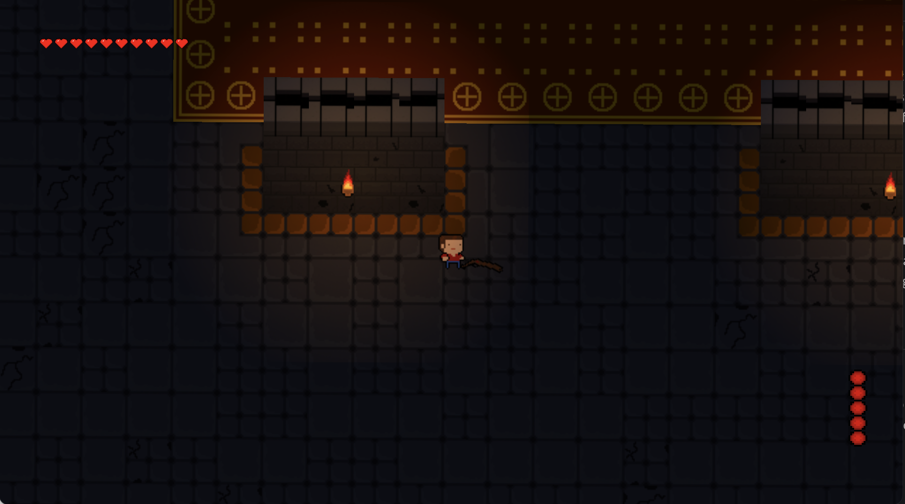

Game Dev Post 1
Hello, in this post and future posts I will be detailing my expierences with game development and the project I am working on. I hope you enjoy reading about my journey and the things I have learned along the way.
Introduction
I have never made a game before but I have always wanted to try, so when I had some time this summer I decided to just throw myself into game development. I wanted to create everything in my game from scratch, besides the actual engine, so I could learn as much as possible and challenge myself. I started off with getting a basic idea of what I wanted to make. I landed on a bullet hell game that is heavily inspired by "Enter the Gungeon". I now needed to pick a engine on which I can build my game in. I did some research and picked Godot, as it seemed to be the best fit for my game.
Some more background on my game is that it will be a 2D bullet hell game. I hope to eventually add procedural generation so I can try to make it a rougelite/rougelike. I'm still not sure on the details of the game but my overall thought is that there will be a procedurally generated level with one boss where you win if you kill the boss. I want to limit the scope of my game so I can hopefully eventually finish it.
Sprites
I wouldn't consider myself an artist, I don't draw much, and I'm not very good at it. So I decided to go with a pixel art style for my game. I used Piskel, a free online sprite editor that is very easy to use and has a lot of features. I found it very easy to use and I was able to make some decent sprites for my game. I made sprites for the player, bullets, and a basic mob (a slime). I also made a few different tiles for the level. I'm happy with how they turned out and I think they will work well in my game.
I've so far only animated a few sprites, a basic mob and the bullets. I'm happy with my progress in spriting, I've gotten better and more importantly I've become faster. I've also learned a lot about pixel art and animating sprites. I didn't even know about gradiants before but now I do and I think they can really help make sprites and tiles look better.

Scripting
Now comes the fun part! I get to start scripting the game. Godot has their own scripting language that is built into the engine. I started off by scripting the player, I made it so the player can move around which was really simple with Godot. I then made bullets spawn from the player and go in the direction of the cursor. I then scripted the bullets, which required me to learn about collision detection and how to delete objects. I also had to use some trigonometry to get the bullets to go in the right direction and I wanted a bullet spread for different guns such as shotguns, so I used some more math to get that to work. I added some firing error to the bullets to add some difficulty to the game.
The most difficult part of scripting so far has been the mob AI. I wanted the mob to move towards the player and stop when it reaches a certain distance. I also wanted it to attack periodically. Getting the mob to shoot towards the player was simple, but getting it to track the player and dodge collisions was difficult. I eventually got something that works but is not perfect. I will have to come back to it later to make it better.
Collisions are baked into the game engine itself so it was actually pretty easy to work with them. I did run into a few issues, but with some research and reading the documentation I was able to get everything working.
HUD
The last thing I have worked so far is the HUD. I wanted to keep it simple so I just added a health bar and a ammo counter. I still need to actually create a reload animation but I have the logic for it in place. The HUD wasn't too difficult to make, I just had to learn how to use the UI elements in Godot. I also made everything dynamic and so I can easily change the size of the health bar or the ammo counter to correspond with what I need.

Future Plans
I'm happy with what I have so far, but I haven't even gotten to the tricky part yet, procedural generation. I also need to add more mobs, guns, and a boss. I might potentially add a shop system where you can buy power ups. I'm also thinking about adding a dodge mechanic, but I'm not sure yet.
The music and sound effects for the game I hope to also do from scratch. I have some expierence with music production so I'm not too worried about that. As for sound effects I'm not entirely sure on how to do them, so I might source them from somewhere else.
Overall this project has been so much fun and insightful so far. I have really enjoyed learning about game development and what goes into making a game solo. I hope to continue to work on this project and eventually finish it, but I'm not in a rush. I still have the hardest parts to come and I want to make sure I do them right.
Thanks for reading.
Posted by: Aidan Vidal
Posted on: June 24, 2024